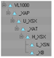

Objects can be configured with movement axes. The position of the axis is marked with an auxiliary object.
Objects ordered below the auxiliary object in the tree structure can be moved in the appropriate manner:

The image shows an object tree of a moving head fixture. The object 'VL1000’ is the root of the fixture.'_XAP’ is the pan axis of the model. All objects below are rotated around this axis.